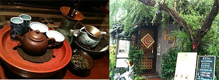
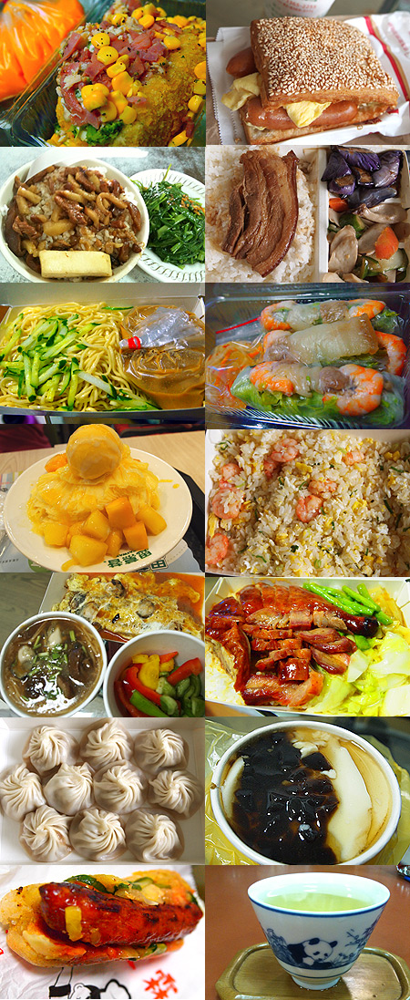
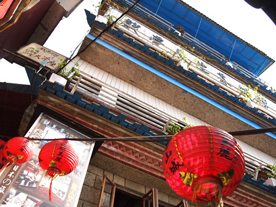
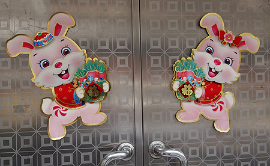
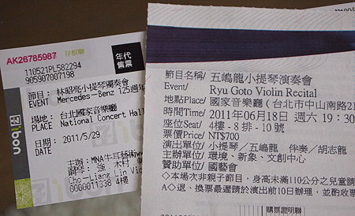
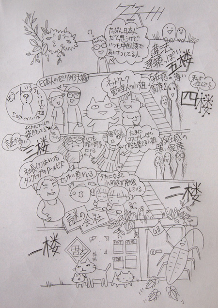
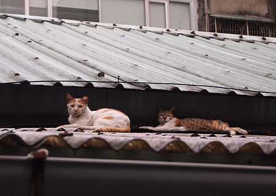
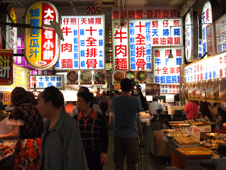
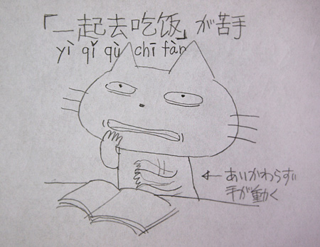
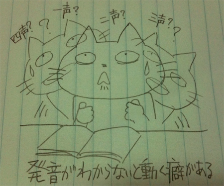

カテゴリ: 台北留学
-
台湾なぞもの
你看！你看！ 这个你知道吗？？ 不对！不对！这碟子不是调色…

-
台湾新規開店
那一天，我想去了SOGO。 我走路到MRT站去，这个的时候我听到音乐！ あの日はそごうに行こうと思って、とことこMRT(駅)まで歩いていくとこだった。 と、ど…

-
台湾茶芸館めぐり
もう日本に帰国しちゃってるんですが、在台湾時の功夫茶、茶芸館めぐりについて。 我已经回日本，可是我要写在台湾的日常（喝泡茶，去茶馆） ----…

-
猫村（台湾・台北・侯硐）
朋友告诉我台湾有很多猫住在的地方了。 听说以后上网找一找这儿。 ！我上网看到这儿！ 很多猫住在的地方是[侯硐] [侯ఈ…

-
金曜のわたし
我最喜欢星期五的下课的时候。 因为以后的两天没上课！所以这个时候我跳出去学校。 我昨天下…

-
あいかわらず食い倒れ
そんなこんなで日本食が恋しくなったりもするけど、 基本的にまいにち地元ごはんです。 肉がおいしいー。 市場に行くと「これからぼくたちお肉になります」っていうニワトリたちが私をじーっと見るもんだから…

-
九份猫とバス
台北近郊の人気観光スポット九份に行ってきた。 台北車站から電車に乗って50分くらい＋バス。 とにもかくにも、日本人観光客がわんさか！ここは日本かー？ってぐらい日本語を聞いた。 やっぱ…

-
中文の詩
ある朝起きたら。ポエムってた。 ↓日本語訳 「私のうた」 わたしは日本人、無職だよ！ 毎日お酒飲んでる 中国語の勉強、調子よくない！飲んじゃえ！ 中国語話せない！飲んじゃえ！ 中国語書けない！飲…

-
折り返し地点。
台湾留学も折り返し地点。 はやいねー！ 相変わらず中国語は微妙な成長。 授業が進むほどわけわからないことが山ほど！ 「了」の意味がなんでこんなにあるんだー！！とか（基本、完了を意味する「了」な…

-
国家音楽院
台北のコンサートホール「国家音楽院」に行ってきた。 …というのも、私が大好きなヴァイオリニスト「林昭亮（チョーリャンリン）」のコンサートがあるということを知ったから。 もともと台湾人のチョーリャンリン…

-
台湾の住居
台湾の我が家は、台湾ではごくごく一般的な共同住居。 概観はやたらめったら古くて勝手に緑化が進み、ツギハギみたいなタイルが貼ってあって、5階はトタンでできている。（入居当初、5階があるなんて思ってもいな…

-
台湾ねこにゃーん！
うちの近所に住んでいるウワサの3匹の猫のうち2匹。あと尻尾がぐねぐねの黒猫がいる。 モデルガンのお店の店番猫 ペットショップの子猫A。遊んで攻撃がすごかった。 ペットショップの子猫B。なん…

-
台湾っぽいの
そういえば台湾っぽい写真をあげていなかったなー！ということで、台湾っぽいの。 ↓これは士林夜市の美食街 ↓月桂冠の樹 ↓どこを歩いても目に飛び込んでくる情報量が多い ↓微妙なの（1） …

-
台湾生活3週間目
相変わらず苦悩の中国語レッスン。 「一起去吃饭」の発音は口を左右に開いて「いちー」口をすぼめて「ちゅー」 また口を左右に広げて舌を上あごに付けて「ちー」上の歯を下唇につけて「ふぁん」…

-
台北暮らし
台北に来て2週間！ 涙の会社退職からてんやわんやの引越しを経て、無事に出国。 なんだかもうイベントてんこもりの2011春！ 台湾に来て10日ぐらいは、街のリズムと自分の生活リズムがあわなかったり、…
